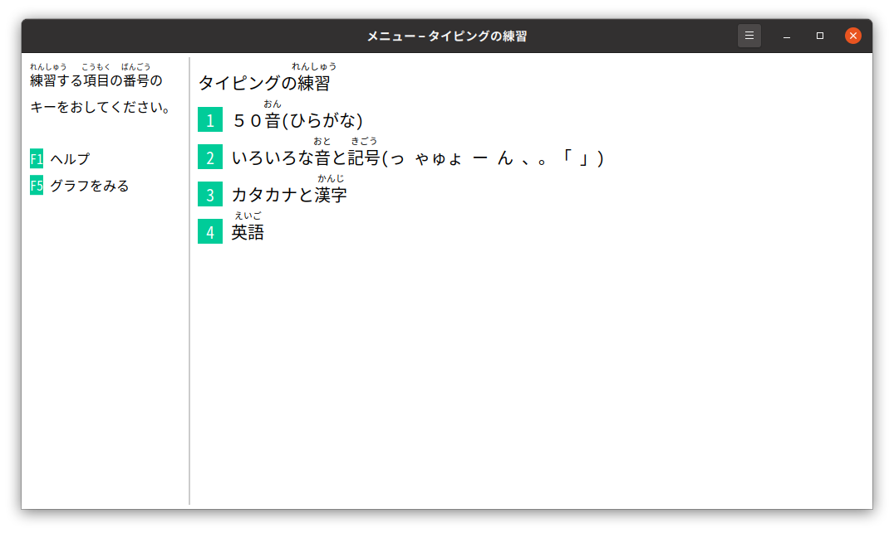
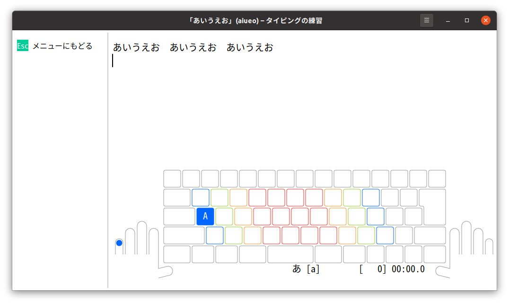

つかいかた
「タイピングの練習」をはじめると、したのようなウインドウがひらきます。

練習をはじめるには、練習したい項目の数字をキーボードでおします。たとえば、数字の[1]をキーボードでおすと、「５０音の練習」メニューがひらきます。

ここでもういちど、数字の[1]をキーボードでおすと、「あいうえお」の練習画面がひらきます。

この画面で、「あいうえお あいうえお あいうえお」と入力する練習をします。
画面のしたがわには、キーボードの絵が表示されています。キーボードの[a]キーをおすと「あ」と入力できることをあらわしています。「ひらがなIME」がローマ字入力をつかう設定になっていると、この画面になります。
キーボードのキーをどの指でおすかはきまっています。
| キーの色 | つかう指 |
|---|---|
| あお色 | 小指 |
| みどり色 | くすり指 |
| だいだい色 | なか指 |
| あか色 | ひとさし指 |
スペースバーや[変換]キーはおや指でおします。
じっさいに[a]キーをおすと、画面がつぎのようにかわります。
つぎは、キーボードの[i]キーをおすと「い」と入力できることをあらわしています。タイピングを練習するときは、指のうごきをおぼえるようにしましょう。ローマ字ではどうかくのかと、いちいちかんがえたりする必要はありません。
まちがえてしまったときは
キーをまちがえておしてしまうと、例文とちがう文字が入力されてしまうことがあります。そのときは、キーボードのみぎうえの[Backspace]キーをおして、まちがえた字をけしてください。[Backspace]キーには、文字のかわりに[⌫]というマークがついていることもあります。
むやみにキーボードをはやくうとうとすると、キーをまちがえておしてしまいがちです。タイピングのじょうずなひとがキーをおしまちがえることは、めったにありません。あせらず、キーをまちがえないように注意しながら練習してみてください。そのほうが、結果的にははやくうてるようになります。
練習結果
テキストをさいごまでただしく入力できると、練習結果の画面にかわります。小学生のあいだは、じぶんの学年とおなじ数の☆をとれるようになるまで練習してみてください。たとえば、小学校５年生なら、したの画面のように５つ黄色の☆をとれればじゅうぶんです。
ぜんぶ入力するのに、どのくらい時間がかかったか。どれくらい、まちがえてしまったか。そうしたことをもとに、☆が表示されています。まちがえておした回数がおおいと、どんなにはやくキーをうっても☆はふえません。
練習をさらにつづけるときは[Enter]キーを、メニューにもどるには[Esc]キーをおします。
グラフをみる
タイピングがうまくなっていくスピードは、ひとによってちがいます。それでも、まいにち練習をつづけていると、だれでもすこしずつはやくうてるようになります。メニュー画面で[F5]キーをおすと、それまでの練習成果をグラフでたしかめられます。

「タイピングの練習」のやめかた
キーボードで[Ctrl]キーをおさえながら、[Q]キーをおすと、「タイピングの練習」をやめられます。
[Ctrl]キーなどと文字キーを同時におして実行する操作を「キーボード ショートカット」とよんでいます。キーボード ショートカットは、よく[Ctrl]-[Q]のようにかかれています。
基本的なコンピューターの操作については、どのアプリケーション ソフトウェアもおなじキーボード ショートカットをつかうようになっています。[Ctrl]-[Q]はアプリケーション ソフトウェアを終了させるときにつかうキーボード ショートカットです。[Q]は、英語の"quit"という単語の頭文字からきています。「やめる」という意味です。